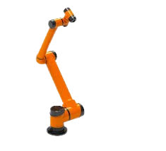

In industrial applications involving 6-axis robots, accurate Tool Center Point (TCP) calibration is essential for high-precision tasks such as assembly, welding, and machining. Traditional TCP methods are often time-consuming, dependent on operator skills, and require manual recalibration, leading to downtime and reduced productivity. This project proposes an automated, accurate, and efficient solution to compute the TCP while minimizing human intervention and improving adaptability to different tool configurations.
TCP calibration is a fundamental step in industrial robotics to ensure accurate tool positioning during manipulation, machining, and assembly tasks. Traditionally, the TCP is determined manually or using classical geometric methods based on repeated measurements. Common industrial approaches include the 4-point, 6-point, and 20-point methods, which rely on different numbers of pose measurements to compute the TCP. Although these techniques improve accuracy, they can be time-consuming and dependent on operator expertise.

Collaborative Robot AUBO i10
The automatic TCP calibration system is based on a laser displacement sensor designed for accurate and reliable tool detection. The sensor integrates two laser emitters and two BPW77NA phototransistors arranged in a crossed-beam configuration. This setup enhances detection robustness by minimizing the effects of incidence angle and surface reflectivity, enabling accurate recording of the robot's coordinates during tool motion.